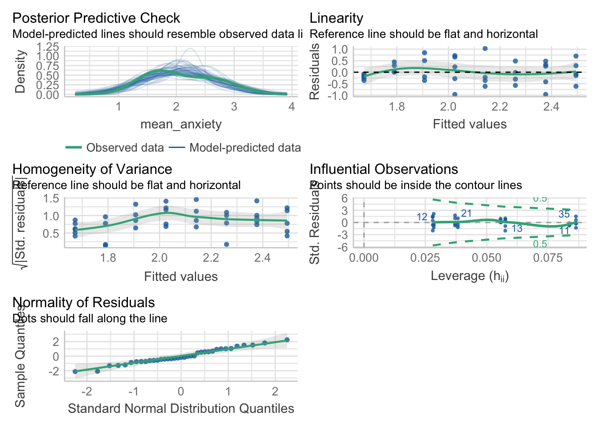

robot |>
ggplot(aes(Score)) +
geom_histogram(bins = 12)9. ANOVA and linear regression
Three important things to remember:
As you complete the handout, please don’t just read the commands, please type every single one of them. This is really important: Learning to program is like practicing a conversation in a new language. You will improve gradually, but only if you practice.
If you’re stuck with something, please write down your questions (to share later in class) and try to solve the problem. Please ask your group members for support and, conversely, if another student is stuck, please try to help them out, too. This way, we develop a supportive learning environment that benefits everybody. In addition, get used to the Help pages in RStudio and start finding solutions online (discussion forums, online textbooks, etc.). This is really important, too. You will only really know how to do quantitative research and statistical analyses when you are doing your own research and dealing with your own data. At that point, you need to be sufficiently autonomous to solve problems, otherwise you will end up making very slow progress in your PhD.
Finally, if you do not complete the handout in class, please complete the handout at home. This is important as we will assume that you know the material covered in this handout. And again, the more you practice the better, so completing these handouts at home is important.
References for this handout
Many of the examples and data files from our class come from these excellent textbooks:
- Andrews, M. (2021). Doing data science in R. Sage.
- Crawley, M. J. (2013). The R book. Wiley.
- Fogarty, B. J. (2019). Quantitative social science data with R. Sage.
- Winter, B. (2019). Statistics for linguists. An introduction using R. Routledge.
Task 0: Setting up our environment
You should be able to do all these things, if not - check back on previous week’s content as a reminder
Create a new script and call it Week 9.
Load in the tidyverse library at the top of the script
Task 1: Between-participant ANOVA
We aren’t going to spend much time on ANOVA, because as I said in the lecture it is a special case of the linear regression, and I personally believe that while you need to know that ANOVAs exist (because people still use them) you are always better off using the linear model. In fact, to provde their equivalence, I will demonstrate in Task 3 that the same output from the anova is achieved using lm()
Data
read in the file called robo_lab.csv and call the object robot.
This is a “toy” dataset - we’ve come across these before, but essentially it’s synthetic data to drive home an analytical point. Let’s create some context for this dataset called robot. I have decided that teaching could be more effectively done by a robot, rather than myself. So in my spare time I built three different robots designed to teach statistics. But I don’t know which of the three is best. Robot Alpha (A) is pretty bare bones, I designed in first, and built it with scrap materials. Robot Beta (B) has a dopey little face I made. Finally, I learnt how to 3D print more likelike faces, so I built Robot Omega (O) too.


From these three different robots, who only differ in physical appearance, I believed that the more likelife the robot, the better students would score on a statistics test, because they would be less scared of the robot. Formally, my hypothesis is “scores would be significantly higher amongst individuals assigned Robot O(mega) than those assigned Robot A(lpha) or B(eta)”.
It was now time to test how the students responded to the robots. In a controlled experiment, the researchers randomly assigned groups of students either Robot A(lpha), Robot B(eta), or Robot O(mega). Note this experiment is one factor (Robot assignment) study made of three levels (Robot A, Robot B, Robot C). Those individuals assigned Robot A(lpha) were denoted as belonging to ‘Group A’.
Those individuals assigned Robot B(eta) were denoted as belonging to ‘Group B’.
Those individuals assigned Robot O(mega) were denoted as beloning to ‘Group O’.
Note. The groups are mutually exclusively - i.e., a participant was assigned to either Group A/Robot A, Group B/Robot B, Group O/Robot O.
Prior to the experiment, independent raters reliably agreed that Robot O(mega) more closely resembled a human being than Robot B(eta) [second closest resemblance] and Robot A(lpha) [lowest resemblance].
The dataset contains three variables: participant ID (ID), Which robot they were taught by (Group), How they rated the robot (Likeability), and their test score (Score).
First things first, let us summarise the data and get a mean and SD for score per group. We will need to use group_by() and summarise(). Assign it to an object called robot_descriptives
We can also use max() and min() to get the maximum and minimum scores on the test too.
Visualising
Next, let’s have a look at the data in plot form.
First a histogram, noting that I specify an argument bins = 12. Can you look in the help tab and search for geom_histogram to see what bins does?
Now a boxplot We can use a boxplot because the Group variable is a factor, it is categorical.
Analysis
To identify whether the differences between groups are statistically significant, we need to perform an Analysis of Variance. First, let’s be sure we have chosen the correct type of ANOVA. We have one factor. This is because we have one Independent Variable (Robot) with three levels (Robot A, B and O). Also, the design is between group, as each participant is assigned to only one robot, and data from only one time point is taken.
To run our one-factor between participants ANOVA, we will use tidyverse’s aov() function. Let’s set ‘Score’ as our first dependent variable of examination. ‘Group’ is then our predictive factor (independent variable). Note, in the code below, the DV and the IV are separated by the ‘~’ character. Please carry out the following command. This also includes requesting a summary and effectsize for our model.
model_robot <- aov(data = robot, Score ~ Group)
summary(model_robot) #We ask for a summary of this model. This provides F statistic and P value Df Sum Sq Mean Sq F value Pr(>F)
Group 2 1223 611.3 12.52 6.77e-06 ***
Residuals 237 11571 48.8
---
Signif. codes: 0 '***' 0.001 '**' 0.01 '*' 0.05 '.' 0.1 ' ' 1For calculating effect sizes for ANOVAs, we use eta-squared, or partial eta-squared. For one-way between subjects designs, partial eta-squared is equivalent to eta-squared. We can calculate this using the function effectsize() from the package effectsize. So install and load effectsize first. effectsize also gives us the confidence intervals of the effect too, but note it is only bounded at the bottom and it gives us a message to say so too.
library(effectsize)
effectsize(model_robot) # we ask for an eta2 effect size for our modelFor one-way between subjects designs, partial eta squared is equivalent
to eta squared. Returning eta squared.# Effect Size for ANOVA
Parameter | Eta2 | 95% CI
-------------------------------
Group | 0.10 | [0.04, 1.00]
- One-sided CIs: upper bound fixed at [1.00].ANOVA effect sizes can be interpreted as:
\(\eta^2\) = 0.01 indicates a small effect \(\eta^2\) = 0.06 indicates a medium effect \(\eta^2\) = 0.14 indicates a large effect
Before we move on, realise that we tested three groups and all the ANOVA tells us is that there is a significant difference between groups. But which ones? We need to run additional post-hoc tests to determine the differences.
Post-hoc tests, as mentioned in the lecture, allow us to test each group individually. It is the equivalent (in this case) of running a t-test between each group, but where we have reduced our p-value threshold (acknowledging the issue of multiple comparisons - again see the lecture).
We need to install and load a new library called rstatix first
library(rstatix)
Attaching package: 'rstatix'The following objects are masked from 'package:effectsize':
cohens_d, eta_squaredThe following object is masked from 'package:stats':
filterpairwise_t_test(robot,
Score ~ Group, # indicate this is paired (within participants) data
p.adjust.method = "bonferroni" #adjust for bonferroni correction
)# A tibble: 3 × 9
.y. group1 group2 n1 n2 p p.signif p.adj p.adj.signif
* <chr> <chr> <chr> <int> <int> <dbl> <chr> <dbl> <chr>
1 Score A B 80 80 0.0417 * 0.125 ns
2 Score A O 80 80 0.00000123 **** 0.0000037 ****
3 Score B O 80 80 0.00372 ** 0.0111 * The output from this gives us a lot of new information. Importantly, it breaks down the differences between each group, compares them, and gives us an adjusted p-value, which is adjusted for the multiple comparisons. It also tells us whether or not the new p-value is significant or not. In this case, we can see that groups A & B are not significantly different, A & O are, and B & O are too. So the most lifelike robot leads to greater test scores, and A and B are not significantly different, perhaps because they’re both too robot-y.
Right, we’ve covered a lot of analysis and now we need to gather all the relevant information together for reporting the ANOVA results in APA format. To do this, let’s run all the outputs together so we can identify all the necessary values.
robot_descriptives# A tibble: 3 × 3
Group mean SD
<chr> <dbl> <dbl>
1 A 58.1 6.45
2 B 60.4 7.27
3 O 63.6 7.22summary(model_robot) Df Sum Sq Mean Sq F value Pr(>F)
Group 2 1223 611.3 12.52 6.77e-06 ***
Residuals 237 11571 48.8
---
Signif. codes: 0 '***' 0.001 '**' 0.01 '*' 0.05 '.' 0.1 ' ' 1effectsize(model_robot)For one-way between subjects designs, partial eta squared is equivalent
to eta squared. Returning eta squared.# Effect Size for ANOVA
Parameter | Eta2 | 95% CI
-------------------------------
Group | 0.10 | [0.04, 1.00]
- One-sided CIs: upper bound fixed at [1.00].pairwise_t_test(robot,
Score ~ Group, # indicate this is paired (within participants) data
p.adjust.method = "bonferroni" #adjust for bonferroni correction
)# A tibble: 3 × 9
.y. group1 group2 n1 n2 p p.signif p.adj p.adj.signif
* <chr> <chr> <chr> <int> <int> <dbl> <chr> <dbl> <chr>
1 Score A B 80 80 0.0417 * 0.125 ns
2 Score A O 80 80 0.00000123 **** 0.0000037 ****
3 Score B O 80 80 0.00372 ** 0.0111 * And now to answer questions on the values we have
What are the degrees of freedom of the ANOVA? Reported as “(X, Y)”. (, )
What is the F-value?
What is the p-value? Report this as 3 decimal places, unless it is under .001, in which case report “< .001”. p
Is this a significant model?
What is the effect size, reported to 2dp?
What is the adjusted p-value for group A & B? Again to 3dp unless it is under .001, in which case report “< .001”. p
What is the adjusted p-value for group A & O? Again to 3dp unless it is under .001, in which case report “< .001”. p
What is the adjusted p-value for group B & O? Again to 3dp unless it is under .001, in which case report “< .001”. p
Great. Now we need to write this in a fashion suitable for a report. Pay attention to where each value goes.
A one-factor between-participants ANOVA revealed that test scores were significantly different between our robot groups (Robot A M = 58.10, SD = 6.45, Robot B M = 60.36, SD = 7.27; Robot O M = 63.60, SD = 7.22), F(2,237) = 12.52, p < .001, η2 = 0.10. Posthoc tests using bonferroni correction found that group O yielded significantly higher scores than group A (padj < .001), as well as higher scores than group B (padj < .011). No significant difference was seen between groups A and B (padj = .125). This suggests that the more likelike robot Omega produces significantly higher test scores than robots Alpha and Beta.
Task 2: Within-participant ANOVA
So that was a between-participant ANOVA, where participants were only in one group. Not both. Now what if we wated to test how a factor can influence a participant. Perhaps levels of self-esteem over three different time points.
We can find this data in the datarium package, so another one to install! We don’t need to load it when we then run this next command
data("selfesteem", package = "datarium")
selfesteem# A tibble: 10 × 4
id t1 t2 t3
<int> <dbl> <dbl> <dbl>
1 1 4.01 5.18 7.11
2 2 2.56 6.91 6.31
3 3 3.24 4.44 9.78
4 4 3.42 4.71 8.35
5 5 2.87 3.91 6.46
6 6 2.05 5.34 6.65
7 7 3.53 5.58 6.84
8 8 3.18 4.37 7.82
9 9 3.51 4.40 8.47
10 10 3.04 4.49 8.58Currently the data is in what is called wide format. We have a participant per row, and we have all their data associated in different columns. For a lot of analyses, we are better off with a long format or tidy format. For tidy data, each row represents a single observation, and the observations are grouped together into cases based on the value of a variable. Sounds confusing, let’s run some code that does this for us, and have a look at what changes
selfesteem_long <- selfesteem |>
pivot_longer(cols = t1:t3, names_to = "time", values_to = "score")
selfesteem_long# A tibble: 30 × 3
id time score
<int> <chr> <dbl>
1 1 t1 4.01
2 1 t2 5.18
3 1 t3 7.11
4 2 t1 2.56
5 2 t2 6.91
6 2 t3 6.31
7 3 t1 3.24
8 3 t2 4.44
9 3 t3 9.78
10 4 t1 3.42
# ℹ 20 more rowsCompute some descriptive statistics like above and save it to a object called selfesteem_descriptives. Don’t forget to group by time
Create a boxplot
selfesteem_long |>
ggplot(aes(time, score)) +
geom_boxplot()Looks like we can expect a pretty big difference in self-esteem over time!
model_selfesteem <- anova_test(data = selfesteem_long, dv = score, wid = id, within = time)
get_anova_table(model_selfesteem)ANOVA Table (type III tests)
Effect DFn DFd F p p<.05 ges
1 time 2 18 55.469 2.01e-08 * 0.829The self-esteem score was statistically significantly different at the different time points during the diet, F(2, 18) = 55.5, p < 0.0001, eta2[g] = 0.83.
- F Indicates that we are comparing to an F-distribution (F-test); (2, 18) indicates the degrees of freedom in the numerator (DFn) and the denominator (DFd), respectively; 55.5 indicates the obtained F-statistic value
- p specifies the p-value
- ges is the generalized effect size (amount of variability due to the within-subjects factor) - eta-squared
pairwise_t_test(selfesteem_long,
score ~ time, paired = TRUE,
p.adjust.method = "bonferroni"
)# A tibble: 3 × 10
.y. group1 group2 n1 n2 statistic df p p.adj p.adj.signif
* <chr> <chr> <chr> <int> <int> <dbl> <dbl> <dbl> <dbl> <chr>
1 score t1 t2 10 10 -4.97 9 0.000772 2e-3 **
2 score t1 t3 10 10 -13.2 9 0.000000334 1e-6 ****
3 score t2 t3 10 10 -4.87 9 0.000886 3e-3 ** All the pairwise differences are statistically significant.
How would you write this up? Give it a go
Tip
The self-esteem score was statistically significantly different at the different time points, F(2, 18) = 55.5, p < 0.0001, generalized eta squared = 0.82. Post-hoc analyses with a Bonferroni adjustment revealed that all the pairwise differences, between time points, were statistically significantly different (p <= 0.05).
Brilliant. We breezed through this second ANOVA because it is similar to the first but it just uses some different functions to arrive at the same point. The output values are the same type, just formatted differently.
You will note that we didn’t really check the assumptions of our ANOVAs
Task 3: Linear regression
This is taken from Glasgow’s excellent PsyTeachR materials.
We are analysising responses from the STARS Statistics Anxiety Survey. It was administered to students in the third-year statistics course in Psychology at the University of Glasgow. All responses are anonymised.
“The STARS survey (Cruise, Cash, & Bolton, 19851) is a 51-item questionnaire, with each response on a 1 to 5 scale, with higher numbers indicating greater anxiety.”
It looks something like:
{kind=link}
Using data from attendance at weekly drop-in sessions for extra support, let’s see whether a relationship between attendance and anxiety exists. We would expect that greater attendance of sessions results in lower statistical anxiety
We hypothesise that increased drop-in session attendance results in reduced anxiety scores.
Rows: 37 Columns: 52
── Column specification ────────────────────────────────────────────────────────
Delimiter: ","
dbl (52): ID, Q01, Q02, Q03, Q04, Q05, Q06, Q07, Q08, Q09, Q10, Q11, Q12, Q1...
ℹ Use `spec()` to retrieve the full column specification for this data.
ℹ Specify the column types or set `show_col_types = FALSE` to quiet this message.
Rows: 100 Columns: 2
── Column specification ────────────────────────────────────────────────────────
Delimiter: ","
dbl (2): ID, n_weeks
ℹ Use `spec()` to retrieve the full column specification for this data.
ℹ Specify the column types or set `show_col_types = FALSE` to quiet this message.Data Tidying
We want to read in the two datafiles (L3_stars.csv, psess.csv) called stars and engage respectively.
Have an explore of the data. The ID column is shared across the datasets (remember we experienced something similar last week), and the variable n_weeks in the psess.csv file tells you how many (out of eight) a given student attended. The rest of the data in stars are the results of the test.
Our next step is to calculate a mean anxiety score for each student. We currently have 51 different answers to the scale items, and we just need one value per participant.
Currently the data is in what is called wide format. We have a participant per row, and we have all their data associated in different columns. For a lot of analyses, we are better off with a long format or tidy format. For tidy data, each row represents a single observation, and the observations are grouped together into cases based on the value of a variable. Sounds confusing, let’s run some code that does this for us, and have a look at what changes
stars_long <- stars |>
pivot_longer(cols = Q01:Q51, names_to = "Question", values_to = "Score")
head(stars_long)# A tibble: 6 × 3
ID Question Score
<dbl> <chr> <dbl>
1 3 Q01 1
2 3 Q02 1
3 3 Q03 1
4 3 Q04 1
5 3 Q05 1
6 3 Q06 1What changed? We went from a 37x52 dataset, to a 1887x3 dataset, where we now have ID as one column, Question (which was the columns going Q01, Q02,…, Q51) and the values from those columns in the Score column. We converted from a wide to a long format.
The convenience of having a long (or tidy) format is that we can calculate statistics (like means and SDs) far more conveniently.
In the code chunk below, replace the *** with the right variables
stars_mean <- stars_long |>
na.omit() |> #remove any non-responses
group_by(***) |>
summarise(mean_anxiety = mean(***))The next step is to join the two datasets together (stars_mean and engage) using inner_join() which we used in last week’s worksheet. Using the same code structure as last week, but replacing the variables as needed, can you get the same output below saved to an object called data?
# A tibble: 37 × 3
ID mean_anxiety n_weeks
<dbl> <dbl> <dbl>
1 3 1.06 5
2 7 2.71 2
3 12 2.24 3
4 16 2.86 2
5 23 1.71 6
6 29 1.80 7
7 39 1.96 2
8 42 2.24 7
9 43 2.69 5
10 44 1.92 4
# ℹ 27 more rowsWe can also run the below to get descriptive statistics for the overall sample. This can be useful for a future writeup of the research. Run the following code to get an easy summary of the data, make sure you understand what each line does and how it corresponds to the output
descriptives <- data |>
summarise(mean_anx = mean(mean_anxiety, na.rm = TRUE),
sd_anx = sd(mean_anxiety, na.rm = TRUE),
mean_weeks = mean(n_weeks, na.rm = TRUE),
sd_weeks = sd(n_weeks, na.rm = TRUE))Data Visualisation
Great. Now we have the data in the desired format, we need to plot the data to see if a general trend is present
We will use ggplot (as we have done before) to create a scatterplot of mean anxiety on the x-axis and n_weeks on the y-axis. You actually used almost identical code to create this in week 8 - Conducting a correlation
It should look like this:
data |>
ggplot(aes(mean_anxiety, n_weeks)) +
geom_point() +
geom_smooth(method = "lm", se = FALSE)`geom_smooth()` using formula = 'y ~ x'What does this general trend show us? What do we see as a relationship in the data?
Conducting a linear regression
Now we have tidied the data and visualised what we want to do, we can run the regression. We tidy the data to get it into the format required for the regression, and we plot the data to check some of the assumptions (linearity), and to see whether the data is suitable for regression modelling.
For linear regression we will use the function lm() which stands for linear model. It comes from base R and is commonly used for a lot of things. We use the same kind of syntax we used before in analysis DV ~ IV.
We run a linear regression using the following code to predict the anxiety from the number of weeks. So we want to know if increased attendance significantly reduces anxiety.
model_stars <- lm(mean_anxiety ~ n_weeks, data)
summary(model_stars)
Call:
lm(formula = mean_anxiety ~ n_weeks, data = data)
Residuals:
Min 1Q Median 3Q Max
-0.96605 -0.29900 -0.08293 0.32864 1.03414
Coefficients:
Estimate Std. Error t value Pr(>|t|)
(Intercept) 2.61215 0.17402 15.010 < 2e-16 ***
n_weeks -0.11746 0.03392 -3.463 0.00143 **
---
Signif. codes: 0 '***' 0.001 '**' 0.01 '*' 0.05 '.' 0.1 ' ' 1
Residual standard error: 0.4929 on 35 degrees of freedom
Multiple R-squared: 0.2552, Adjusted R-squared: 0.2339
F-statistic: 11.99 on 1 and 35 DF, p-value: 0.001428Great, we have a summary of our regression analysis, and now we need to extract the relevant information from it. The output should look familiar to the t-test and correlation output from last session. I go through an example of this in this session’s lecture material for understanding an interpretation.
Answer the following questions based on the output
- The estimate of the y-intercept for the model, rounded to two decimal places, is
- To three decimal places, if the GLM for this model is y = mX=C, what is m?
- To three decimal places, for each additional week attended, mean anxiety by
- To two decimal places, what is the overall F-ratio of the model?
- Is the overall model significant?
- What proportion of the variance does the model explain (to 2dp)?
Answers
- In the summary table, this is the estimate of the intercept. 2.In the summary table, this is the estimate of mean_anxiety, i.e., the slope. 3.In the summary table, this is also the estimate of mean_anxiety, the slope is how much it decreases so you just remove the - sign.
- In the summary table, the F-ratio is noted as the F-statistic.
- The overall model p.value is .001428 which is less than .05, therefore significant.
- The variance explained is determined by R-squared, you simply multiple it by 100 to get the percent. You should always use the adjusted R-squared value.
Cool. Before we move on, let’s look at the interpretation of the model, and specifically question 3 here. We say that the mean anxiety for those who attend no weeks is the same as the Y intercept (the answer to Q1), but for each week attended, anxiety . Hopefully you see how we interpret this from the data that we have.
Checking assumptions
Recall from the lecture that we cannot check the assumptions until we have our model residuals. It seems a bit backwards, create a model and check whether we can run the model, but that’s how it works unfortunately. The assumptions are
- The outcome/DV is a interval/ratio level data
- The predictor variable is interval/ratio or categorical (with two levels)
- All values of the outcome variable are independent (i.e., each score should come from a different participant)
- The predictors have non-zero variance
- The relationship between outcome and predictor is linear
- The residuals should be normally distributed
- There should be homoscedasticity (homogeneity of variance, but for the residuals)
Assumptions 1-3 are straightforward. We know this from the data we have and the design of the study. Assumption 4 simply means that there is some spread in the data - for example, there’s no point running a regression with age as a variable if all your participants are 20 years old. We can check this using the scatterplot we created already and we can see that this assumption is met. Phew!
For the rest of the assumptions, we’re going to use functions from the packages performance that make life a whole lot easier. We will use a package to do the assumption visualisations for us called performance which is quite handy. So first, install and load performance.
We specifically want check_model() from performance and it is run as:
check_model(model_stars)
Looking at the plots (you may wish to zoom into it for easier viewing), it even tells us what we are wanting to look for. All of them look okay, for Assumption 5, linearity, the plot suggests it’s not perfect but it looks good enough.
For Assumption 6, normality of residuals, the plot does suggest that the residuals might be normal, but we can double check this with check_normality() which runs a Shapiro-Wilk test.
check_normality(model_stars)OK: residuals appear as normally distributed (p = 0.625).For homoscedasticity, the plot looks mostly fine, but we can double check this with check_heteroscedasticity() and the result confirms that the data have met this assumption.
check_heteroscedasticity(model_stars)OK: Error variance appears to be homoscedastic (p = 0.301).Great. So we can be content that the model we created is suitable. It meets the assumptions and tests our hypothesis appropriately. Let us move on to the next step, determining the effect size. We did this for chi-squared and t-tests, anovas above, so let us conduct one for a linear regression too.
Effect sizes
For a linear regression, we can use Cohen’s f2 (Selya, 2012)2 which is calculated through \(F^2 = R^2/(1-R^2)\). We have to calculate this ourselves which is relatively trivial.
We first want to extract the R2 value from our model (making sure it is the adjusted one)
model_stars_summary <- summary(model_stars) # save to an object
r2 <- model_stars_summary$adj.r.squared #extract the relevant value
r2/(1-r2) #compute f2[1] 0.3053367According to Cohen’s (1988)3 guidelines, f2 ≥ 0.02, f2 ≥ 0.15, and f2 ≥ 0.35 represent small, medium, and large effect sizes, respectively.
So what size effect do we have?
Writing up a linear regression result
Okay, wow. We’ve done a lot of computation to get to this point. It is all worthless if we cannot articulate it in a meaningful manner for our dear reader. We want to revisit our descriptives object for means and SDs, our model output in model_stars_summary, and the effect size we calculated. For APA formatting, we report all values to 2 decimal places, except for p-values which are 3dp, unless it is under .001, then we report <.001. Some of the values are filled in for you.
A simple linear regression was conducted to determine whether statistics anxiety (mean = , SD = ) was predicted via attendance of drop-in sessions (mean = 4.54, SD = 2.42). The regression found a significant decrease in mean anxiety, F(1, 35) = , p = .001, R2adj = , f2 = , accounting for % of variance. Attendance was a significant predictor (β = -.12, p = 0.001.)
Task 4: Proof: ANOVA == Linear Regression
Using the same data as the robot ANOVA
model_robot_lm <- lm(Score ~ Group, robot)
model_robot_lm_summary <- summary(model_robot_lm)
model_robot_lm_summary
Call:
lm(formula = Score ~ Group, data = robot)
Residuals:
Min 1Q Median 3Q Max
-20.3625 -4.6000 -0.2313 4.9000 15.4000
Coefficients:
Estimate Std. Error t value Pr(>|t|)
(Intercept) 58.1000 0.7812 74.372 < 2e-16 ***
GroupB 2.2625 1.1048 2.048 0.0417 *
GroupO 5.5000 1.1048 4.978 1.23e-06 ***
---
Signif. codes: 0 '***' 0.001 '**' 0.01 '*' 0.05 '.' 0.1 ' ' 1
Residual standard error: 6.987 on 237 degrees of freedom
Multiple R-squared: 0.09557, Adjusted R-squared: 0.08794
F-statistic: 12.52 on 2 and 237 DF, p-value: 6.768e-06round(model_robot_lm_summary$fstatistic[[1]], 4) == round(summary(model_robot)[[1]][["F value"]][[1]], 4) #excuse what looks messy, but if you decipher what I have written, I have extracted the F-value from both the original model (on the right) and the linear model (on the left) and tested their equivalence. It returns true because they are the exact same number[1] TRUEI won’t prove all the other numbers are the same, you can do that by looking at the summary outputs
But posthoc values are computed using emmeans like below. Check that the values are the same as in the ANOVA output.
library(emmeans)
emmeans(model_robot_lm, pairwise ~ Group)$emmeans
Group emmean SE df lower.CL upper.CL
A 58.1 0.781 237 56.6 59.6
B 60.4 0.781 237 58.8 61.9
O 63.6 0.781 237 62.1 65.1
Confidence level used: 0.95
$contrasts
contrast estimate SE df t.ratio p.value
A - B -2.26 1.1 237 -2.048 0.1032
A - O -5.50 1.1 237 -4.978 <.0001
B - O -3.24 1.1 237 -2.930 0.0103
P value adjustment: tukey method for comparing a family of 3 estimates emmeans(model_robot, pairwise ~ Group)$emmeans
Group emmean SE df lower.CL upper.CL
A 58.1 0.781 237 56.6 59.6
B 60.4 0.781 237 58.8 61.9
O 63.6 0.781 237 62.1 65.1
Confidence level used: 0.95
$contrasts
contrast estimate SE df t.ratio p.value
A - B -2.26 1.1 237 -2.048 0.1032
A - O -5.50 1.1 237 -4.978 <.0001
B - O -3.24 1.1 237 -2.930 0.0103
P value adjustment: tukey method for comparing a family of 3 estimates Because we used emmeans rather than pairwise_t_tests (the latter won’t work on lm()) we get different outputs from the ANOVA section above, due to differences in how things are calculated. But we see we get the same numbers if we run emmeans here on both. Note that despite differences between emmeans and pairwise_t_tests the same interpretation would be made.
Ta-da! ANOVA is a linear regression, just masked. My advice is to use linear regressions in your own work, but know what an ANOVA is in case someone asks for one (in which case do it using lm anyway) or you come across one in a paper.
Other
The trout ANOVA example from the slides
Data is simulated using Fry and Cox (1970) as a basis4
set.seed(0603) #set the seed for replicability
#generate some data, with length sampled from the normal distribution
trout <- tibble(
waterspeed = c(rep("fast", 20), rep("slow", 20), rep("very slow", 20)),
length = c(rnorm(20, 50, 10), rnorm(20, 60, 10), rnorm(20, 65, 10))
) |>
mutate(length = round(length, 2))
trout# A tibble: 60 × 2
waterspeed length
<chr> <dbl>
1 fast 66.5
2 fast 46.5
3 fast 49.0
4 fast 59.4
5 fast 52.2
6 fast 77.0
7 fast 44.8
8 fast 39.6
9 fast 49.3
10 fast 71.7
# ℹ 50 more rowstrout |>
ggplot(aes(waterspeed, length)) +
geom_boxplot()aov(length ~ waterspeed, trout) |> summary() Df Sum Sq Mean Sq F value Pr(>F)
waterspeed 2 1839 919.5 8.911 0.000429 ***
Residuals 57 5881 103.2
---
Signif. codes: 0 '***' 0.001 '**' 0.01 '*' 0.05 '.' 0.1 ' ' 1effectsize(aov(length ~ waterspeed, trout))For one-way between subjects designs, partial eta squared is equivalent
to eta squared. Returning eta squared.# Effect Size for ANOVA
Parameter | Eta2 | 95% CI
--------------------------------
waterspeed | 0.24 | [0.08, 1.00]
- One-sided CIs: upper bound fixed at [1.00].pairwise_t_test(trout,
length ~ waterspeed, # indicate this is paired (within participants) data
p.adjust.method = "bonferroni" #adjust for bonferroni correction
)# A tibble: 3 × 9
.y. group1 group2 n1 n2 p p.signif p.adj p.adj.signif
* <chr> <chr> <chr> <int> <int> <dbl> <chr> <dbl> <chr>
1 length fast slow 20 20 0.384 ns 1 ns
2 length fast very slow 20 20 0.000176 *** 0.000527 ***
3 length slow very slow 20 20 0.0027 ** 0.00809 ** The bigger the fish, the slower it can swim. So smaller sized fish are more suitable for faster currents as they are not swept away.
The house regression example
The market historical data set of real estate valuation are collected from Sindian Dist., New Taipei City, Taiwan
houses <- read_csv("Real estate.csv")Rows: 414 Columns: 8
── Column specification ────────────────────────────────────────────────────────
Delimiter: ","
dbl (8): ID, transaction_date, house_age, distance_MRT, convenience_store_co...
ℹ Use `spec()` to retrieve the full column specification for this data.
ℹ Specify the column types or set `show_col_types = FALSE` to quiet this message.houses$unit_price |> hist() # looks mostly normal (one very high house price)houses_filt <- houses |> filter(unit_price < 90)
#can we use house_age as a predictor? It isn't a linear relationship, so no
houses_filt |>
ggplot(aes(house_age, unit_price)) +
geom_point() +
geom_smooth()`geom_smooth()` using method = 'loess' and formula = 'y ~ x'#number of shops is more linear
houses_filt |>
ggplot(aes(convenience_store_count, unit_price)) +
geom_point() +
geom_smooth(method = "lm")`geom_smooth()` using formula = 'y ~ x'lm(unit_price ~ convenience_store_count, houses_filt) |> summary()
Call:
lm(formula = unit_price ~ convenience_store_count, data = houses_filt)
Residuals:
Min 1Q Median 3Q Max
-35.339 -7.098 -1.398 6.002 30.661
Coefficients:
Estimate Std. Error t value Pr(>|t|)
(Intercept) 26.6567 0.8717 30.58 <2e-16 ***
convenience_store_count 2.7138 0.1727 15.71 <2e-16 ***
---
Signif. codes: 0 '***' 0.001 '**' 0.01 '*' 0.05 '.' 0.1 ' ' 1
Residual standard error: 10.32 on 411 degrees of freedom
Multiple R-squared: 0.3753, Adjusted R-squared: 0.3738
F-statistic: 246.9 on 1 and 411 DF, p-value: < 2.2e-16#effect size
0.3738/(1-0.3738) #compute f2[1] 0.5969339Footnotes
Cruise, R. J., Cash, R. W., & Bolton, D. L. (1985). Development and validation of an instrument to measure statistical anxiety. Proceedings of the American Statistical Association, Section on Statistical Education, Las Vegas, NV.↩︎
Selya, A. S., Rose, J. S., Dierker, L. C., Hedeker, D., & Mermelstein, R. J. (2012). A practical guide to calculating Cohen’sf 2, a measure of local effect size, from PROC MIXED. Frontiers in psychology, 3, 111.↩︎
Cohen J. E. (1988). Statistical Power Analysis for the Behavioral Sciences. Hillsdale, NJ: Lawrence Erlbaum Associates, Inc↩︎
Fry, F. E. J., & Cox, E. T. (1970). A relation of size to swimming speed in rainbow trout. Journal of the Fisheries Board of Canada, 27(5), 976-978.↩︎